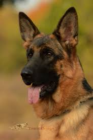
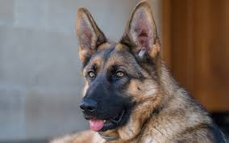
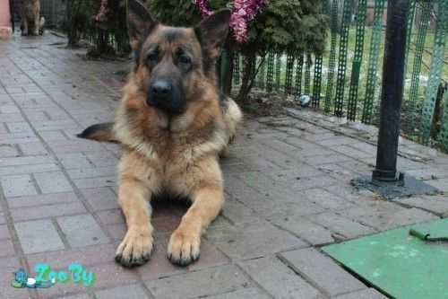

Как нужно правильно ухаживать за собакой?
Уход за собакой состоит из многих факторов, в Как ухаживать за собакой в домашних условиях? Уход за собакойстатье «Уход за щенком» мы говорили о том, какие условия необходимо создать Вашему питомцу для полноценной жизни. Обязательно ознакомьтесь с материалами этой статьи, в ней Вы получите массу полезных советов.
Уход за шерстью собаки требует некоторых усилий с Вашей стороны, но эта процедура просто необходима, чтобы Ваш питомец чувствовал себя хорошо и комфортно.
Уход за шерстью собак разных пород зависит от особенности шерстяного покрова, густоты и длины шерсти, мягкости и капризности волосков. Казалось бы, обычные процедуры купания и расчесывания должны быть одинаковы для всех, однако, есть некоторые нюансы в уходе за шерстью собаки в каждом конкретном случае.
Уход за шерстью собаки включает и купание. Частота купания тоже зависит от типа шерсти собаки.
Для длинношерстных собак с шерстью склонной к образованию колтунов желательно более частое купание и тщательное расчесывание, для короткошерстных собак купание более редкое, примерно раз в месяц. Вода для купания должна соответствовать температуре тела собаки и варьироваться в интервале 37,5-39°С.1441089208_kak-chasto-myt-sobaku.jpg
Сушить феном нужно длинношерстных собак, короткошерстных достаточно тщательно протереть махровым полотенцем.
Помимо шерсти необходимо также подстригать когти собаке, примерно раз в 7-10 дней, при этом важно не задеть кровеносный сосуд в полости когтя, который находится у основания. На лапах также выстригается лишняя шерсть, при этом фасон стрижки соответствует породе собаки. На лапах нередко образуются колтуны, их необходимо вычесывать и выстригать. Также нужно ежедневно осматривать лапы на наличие грязи, стекла, жвачки и других загрязнений. Если собака прошлась по свежему асфальту, гудрону, и прочим химическим веществам, нужно обильно намазать лапы растительным маслом и смыть обильным мыльным раствором или специальным средством для очищения от этого вещества.


Уход за собакой не ограничивается вопросом правильного содержания ее шерсти, внимания требуют и глаза собаки.
У здоровой собаки глаза должны быть чистыми, если вы заметили гнойные выделения из глаз, это значит, что собака может быть больна. Это может быть, как признаком аллергии, так симптомом инфекционного заболевания глаз. В любом случае нужно обязательно показать собаку ветеринару.
При разгрызании твёрдой пищи зубы собаки Уход за зубами и деснаммеханически очищаются от зубного налёта, тем самым препятствуя образованию зубного камня. Если же предотвратить образование зубного камня не удалось, то нужно обратиться к ветеринару для решения этой проблемы. Чтобы избежать образования камня, можно чистить зубы собаке специальным зубным порошком и пастой для собак, и протирать отполированные зубы мягкой тряпочкой.

Интересные факты о немецких овчарках:
- В обеих мировых войнах немецкие овчарки использовались в качества собак-санитаров, подносивших сумки с медикаментами и помогавших выносить раненых солдат с поля боя.
- Изначальным предназначением немецкой овчарки, для которого её и выводили, была охрана стад скота.
- Так как эти собаки очень энергичны, им требуются ежедневные прогулки, причём достаточно продолжительные.